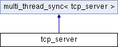

LogicServer
This is Indian Hold'em game logic server.
Public Member Functions
|
List of all members
tcp_server Class Reference
Inheritance diagram for tcp_server:

Public Member Functions
tcp_server
(boost::asio::io_service &io_service, unsigned short port)
void
end_server
()
The documentation for this class was generated from the following files:
C:/git/temp/logic_server/GameLogicServer/GameLogicServer/
tcp_server.h
C:/git/temp/logic_server/GameLogicServer/GameLogicServer/tcp_server.cpp
Generated by
1.8.13
 1.8.13
1.8.13